用這個 repo 做出來會長什麼樣
二十四個虛構的人，二十種行業，七種美學族。族是性格，概念是骨架，兩件事分開。 每一個都跑完整條流程：訪談問出定位、問模型要一個屬於他這一行的概念、把概念寫成純 CSS。 每一份都是零依賴的單一 HTML，沒有框架、沒有 build step、沒有圖片。
訊號
動的性格是流。動效鋪滿畫面，名字用漸層剪成看動效的窗圖鑑
動的性格是漂。深藍夜海配奶白米黃，每張卡各自浮動霓虹街機
動的性格是閃。洋紅配青配黃，霓虹燈管的壞掉感終端
動的性格是開機與待機。深青配螢光青，面板堆疊，有小角色粗獷
動的性格是彈。粗黑框、不模糊的位移陰影、對撞色、超大字復古介面
動的性格是掃描與閃爍。視窗邊框、鉻面、CRT 抖動實體店與在地服務
受眾要的是幾點開、在哪、多少錢、來不來得及。這四份的第一屏都先答完這些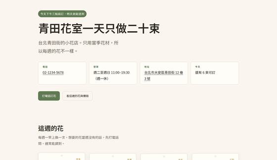
青田花室 · 花店
一天只做二十束
概念是花材牌。電話、營業時間、地址、今天還剩幾束全在第一屏，「來得及嗎」單獨一區。
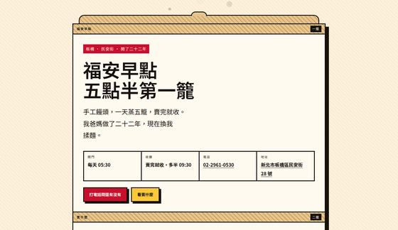
福安早點 · 早餐店
五點半第一籠，賣完就收
概念是蒸籠。一疊籠共用同一道粗框，一籠到五籠往下疊。內容少，靠結構撐。
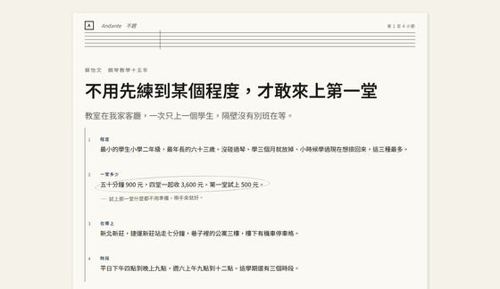
蘇怡文 · 鋼琴老師
不用先練到某個程度，才敢來上第一堂
概念是練習譜。小節號用 counter 從第一屏連到頁尾，第一屏四小節依序是程度、價格、地點、時段。
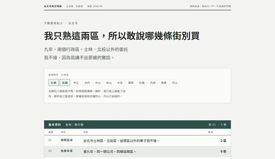
賴宗翰 · 房仲
我只熟這兩區，所以敢說哪幾條街別買
概念是實價登錄明細。行政區選單十個灰掉，用重複讓「只熟兩區」自己講出來。
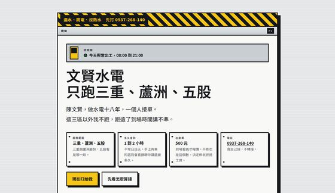
文賢水電 · 水電師傅
只跑三重、蘆洲、五股
概念是配電箱。撥桿合上的是接的、扳下來的是不接的，用重複的單元講邊界。
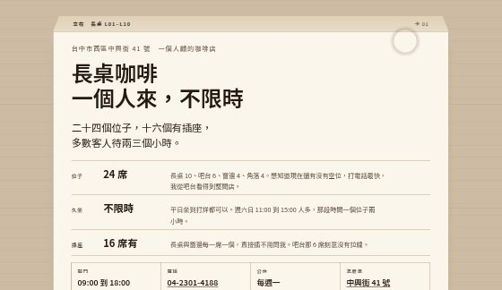
長桌咖啡 · 咖啡店
一個人來，不限時
概念是桌卡。七張卡照客人動線排，不是編號。「沒有」也是一個欄位，受眾只掃右欄就知道合不合用。
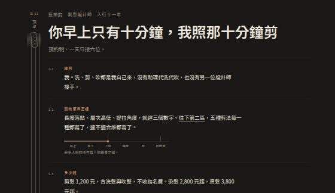
藍柏鈞 · 髮型設計師
你早上只有十分鐘，我照那十分鐘剪
概念是剪髮分區。不能放照片，所以把長度做成一把尺：耳上到肩胛骨六個地標，五種剪法標在同一把尺上。
和安小動物醫院 · 獸醫
只看貓狗，晚上十一點前都問得到人
概念是分診卡。色帶就是分級，卡 02 直接回答「現在就來還是可以等明天」。
專業服務與研究
受眾怕被推銷、也怕自己這種規模對方不接。先寫邊界與收費，比任何專業形容詞有用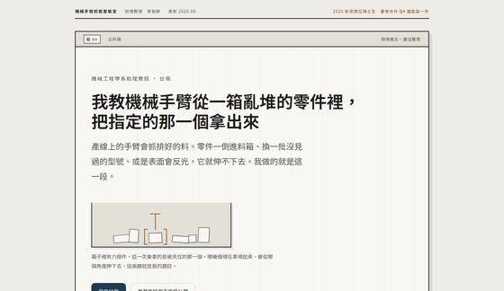
曾郁婷 · 助理教授
我教機械手臂從一箱亂堆的零件裡，把指定的那一個拿出來
概念是料箱。第一屏用一句人話講清楚研究什麼，同行、產業界、想加入的學生各找得到自己那一段。
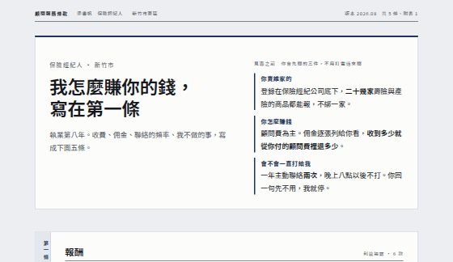
杜孟軒 · 保險理財顧問
我怎麼賺你的錢，寫在第一條
概念是保單條款。每一條結尾的「但書」寫的是對自己不方便的那一面，例如「你聽完決定不投保，顧問費照收」。
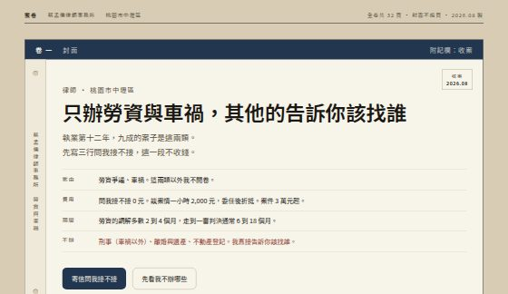
沈冠廷 · 律師
只辦勞資與車禍，其他的告訴你該找誰
概念是案卷。一排卷宗架，四個實心有卷號、四個虛線寫「無」。列「不辦」跟列「辦」用同樣的版面重量。
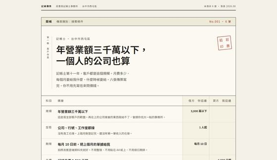
莊惠茹 · 記帳士
年營業額三千萬以下，一個人的公司也算
概念是記帳傳票。標題直接回答「我這種規模你接嗎」，並寫明這頁沒有任何節稅方法。
教學與訓練
掏錢的跟上課的常常不是同一個人。家長問一班幾個人，學員問適不適合我，兩份的第一屏都先答完克制
動的性格是幾乎不動。單色、文件隱喻、方格。內容要被仔細讀的人用這十八個人是虛構的，內容是為了示範寫的，信箱都是 example.tw。
概念是問三個不同模型家族之後收斂出來的，每一個都拿去跟同樣文案、只有版面不同
的中性版做整頁左右比對，克制那四個合計概念版 18 票、中性版 3 票。其餘五族還沒做對打測試。
做法寫在 docs/concept.md，量測方法與已知的限制寫在 docs/craft.md，
表現那一族的手法寫在 skills/03-build/SKILL.md。